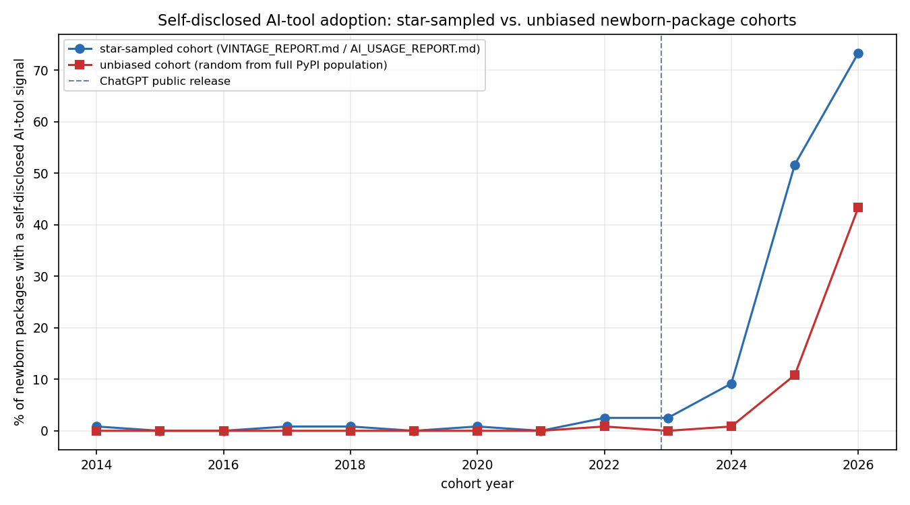
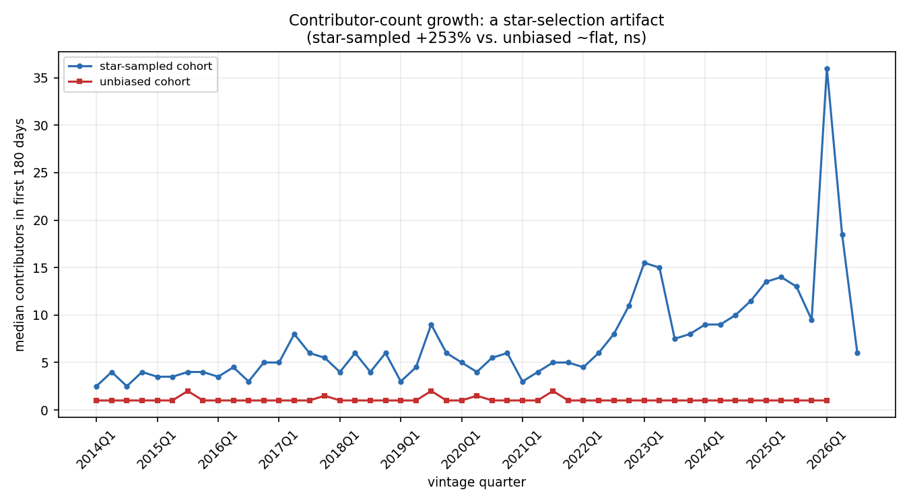

Short answer: partly. The core structural-evolution story in VINTAGE_REPORT.md replicates in direction once the star-popularity sampling bias is removed — functions, bodies, and comments really do get longer and more complex over calendar time, in a uniformly-random sample of the true PyPI population, not just in a sample of repos that happened to attract GitHub stars. But two things that looked like real trends in the star-sampled data turn out to be artifacts of the sampling method, not the underlying population: the headline AI-tool-adoption rate from AI_USAGE_REPORT.md was substantially inflated (2025: 51.7% star-sampled vs. 10.8% unbiased), and the apparent contributor-count growth trend (+253%) vanishes entirely in the unbiased data (~flat, not significant).
This report is the concrete follow-through on the "genuine next step" AI_DEPENDENCY_NETWORK_REPORT.md named but didn't attempt: using the full population of newborn PyPI packages — not a GitHub-star-ranked sample of them — as the base for this project's existing extraction pipeline.
A second, parallel vintage cohort, same target size as the original (30 packages/quarter), same clone → measure → rm -rf extraction machinery, same AI-signal scan — but discovered differently:
language:Python fork:false
created:<quarter range>. Vintage quarter = quarter of the repo's
first git commit (the best signal GitHub-only discovery had available).cl_ecosystem_networks's
full bulk PyPI package population (packages.parquet, ~783K PyPI
packages), restricted to active packages (status IS NULL) with a
parseable github.com/owner/repo URL, stratified by first PyPI
release quarter — no ranking, no popularity signal used anywhere in
the sampling. Vintage quarter and the 180-day snapshot anchor are both
keyed to first PyPI release instead of first git commit; see
vintage_extract_unbiased.py's module docstring for the full
reasoning (release is arguably the cleaner "birth" event for a
published package specifically, vs. first commit being what
GitHub-only discovery had to use as a proxy).1,470 packages extracted across 49 quarters (2014Q1–2026Q1; 2026Q2/Q3
have zero PyPI candidates in the source data snapshot — a data-horizon
limit of when that dump was taken, not a bug). Every target quarter hit
its full 30/quarter, no shortfalls. Discovery itself is a single local
DuckDB query against the parquet file — no GitHub API, no rate limits —
though it surfaced a DuckDB 1.5.1 query-plan bug along the way
(chaining a 51-branch CASE → window function → outer SELECT as
nested CTEs either segfaulted on ORDER BY or silently returned values
from the wrong column; fixed by materializing the intermediate result
into a real temp table first).
A confound specific to this discovery source had to be caught and
filtered before the real run, found during a one-quarter validation
pass: sampling by "first PyPI release in quarter X" surfaces
sub-packages of already-mature monorepos as if they were newborn
packages. open-telemetry/opentelemetry-python and
autoresearch/autora both slipped through initially — their sampled
sub-package's first release was recent, but the underlying shared git
history was 4–7.5 years old (gaps of 1,473 and 2,726 days between first
commit and that release). Measuring "180 days after this release" on
either would have silently scored a mature, many-contributor monorepo as
a newborn small package. Fixed with an asymmetric sanity check: reject
if the repo's first commit is more than 730 days before the sampled
release (empirically set — the other 8 packages in that validation batch
all had gaps of 0–407 days, the normal range for solo/small-team private
development before a first release) or after it at all (impossible under
honest data, and a sign the repository_url doesn't actually match this
package). 208 candidates were rejected on this basis in the full run.

| year | star-sampled | unbiased | gap |
|---|---|---|---|
| 2022 | 2.5% | 0.8% | −1.7pp |
| 2023 | 2.5% | 0.0% | −2.5pp |
| 2024 | 9.2% | 0.8% | −8.3pp |
| 2025 | 51.7% | 10.8% | −40.8pp |
| 2026 | 73.3% | 43.3%* | −30.0pp |
* 2026 unbiased is 2026Q1 only (30 packages) vs. all three quarters (90 packages) for star-sampled — see caveats.
The shape replicates: both cohorts show near-zero self-disclosed
AI-tool usage before 2022 and a rise starting around ChatGPT's release,
consistent with the mechanism (not just the magnitude) being real. But
the star-sampled cohort's 2025 headline number is roughly 4.8× the
unbiased cohort's. GitHub-star-ranked discovery plausibly selects for
exactly the packages most likely to both use and disclose AI tooling:
high-visibility projects care more about onboarding/contributor
documentation (hence more CLAUDE.md/.cursorrules files), and a
meaningful fraction of what gets stars quickly right now is AI-agent
tooling built by AI-tool-using developers. AI_USAGE_REPORT.md's
adoption-rate numbers should be read as this project's star-sampled
population's rate, not the true PyPI-wide rate — the true rate, on
this evidence, is meaningfully lower.
| metric | star-sampled trend | unbiased trend | same direction? | cross-cohort quarterly correlation |
|---|---|---|---|---|
| mean function length | +103%, ρ=0.91*** | +49%, ρ=0.81*** | yes | ρ=0.74*** |
| mean function body length | +120%, ρ=0.95*** | +60%, ρ=0.80*** | yes | ρ=0.73*** |
| mean cyclomatic complexity | +69%, ρ=0.85*** | +42%, ρ=0.69*** | yes | ρ=0.62*** |
| mean docstring length | +94%, ρ=0.53*** | +96%, ρ=0.40** | yes | ρ=0.41** |
| frac. functions with docstring | +60%, ρ=0.28* | +109%, ρ=0.48*** | yes | ρ=0.33* |
| median hunk size (added lines) | +82%, ρ=0.28* | +73%, ρ=0.74*** | yes | ρ=0.17, ns |
| median added lines/commit | +212%, ρ=0.60*** | +239%, ρ=0.82*** | yes | ρ=0.48*** |
(* p<0.05, ** p<0.01, *** p<0.001; ns = not significant. Full
table with all 13 metrics: output/cohort_comparison/vintage_trend_comparison.csv.)
Every metric in this table moves the same direction in both cohorts, and five of seven show a significant positive correlation between the two cohorts' own quarter-by-quarter medians — i.e. not just "both trend up," but they wiggle together, the signature of a real shared calendar-time effect rather than two independent noisy series that happen to share a sign. Magnitudes are consistently smaller in the unbiased cohort (roughly half, in most cases) — star-sampled repos apparently drift toward longer/more-complex/better-documented code faster than the population average, but the underlying direction the whole codebase-evolution finding rests on is not a sampling artifact.

This is the cleanest artifact found. Star-sampled cohort:
flow_n_contributors up +253% over the study period, ρ=0.79,
p=6×10⁻¹². Unbiased cohort: ~flat, ρ=−0.11, p=0.47 (not
significant), cross-cohort correlation ρ=−0.07 (essentially zero — the
two series don't even move together). The unbiased cohort's median sits
at exactly 1 contributor in nearly every quarter across the entire
2014–2026 span: the typical outcome for a uniformly-random newborn PyPI
package, in every era studied, is a solo project. Star-ranked discovery
selects directly on the outcome this metric measures — a repo has to be
popular enough to be found by a stars-sorted search, and popularity
correlates strongly with attracting contributors — so the star-sampled
"trend" is largely measuring how the study's own discovery method
increasingly favors multi-contributor projects in eras where that
selection is easier (more repos to choose from, more AI-tooling repos
going viral fast), not a population-wide shift in how newborn packages
get built. flow_n_commits (+19% star vs. −19% unbiased) and comment
length metrics show the same weaker sign-flip pattern, plausibly related
for the same reason (more contributors → more commits).
deps_extract.py + deps_popularity.py pass
(per-dependency ecosyste.ms lookups) — a separately-scoped,
separately-expensive step, not part of this run.kokhou/jwtools) crashed the first extraction attempt on
an empty-repo edge case (git rev-parse HEAD on a repo with no
commits, unhandled); fixed and the run resumed cleanly from progress
state. Trivial impact (1 candidate rejected, replaced from the
oversample buffer) but noted for completeness.python3 src/vintage_discover_unbiased.py →
output/vintage_unbiased/candidates.jsonpython3 src/vintage_extract_unbiased.py →
output/vintage_unbiased/packages.csv (resumable via
output/vintage_unbiased/progress.json)python3 src/ai_signal_extract_unbiased.py →
output/ai_signal_unbiased/ai_signals.csvpython3 src/cohort_comparison.py && python3
src/cohort_comparison_charts.py →
output/cohort_comparison/*.csv, output/cohort_comparison/charts/*.png